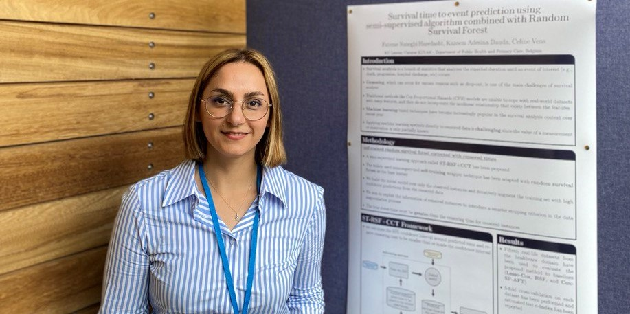

About me
I am a last-year PhD researcher majoring in machine learning with applications in healthcare at KU Leuven. Before joining KU Leuven, I received my master's degree in Bioinformatics from Amirkabir University of Technology in February 2017, and a bachelor's degree in Electrical Engineering from the University of Guilan in September 2011.
